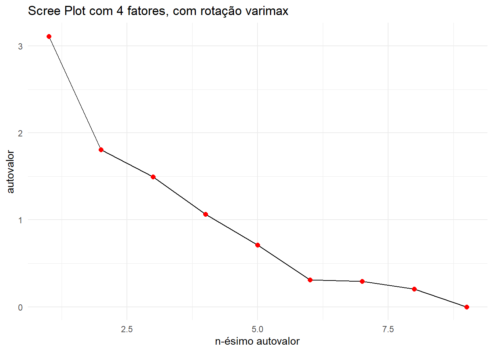

Para demonstrar a aplicação desta técnica, utilizou-se o Exemplo 7.1 (Emprego em países europeus), extraído da obra Métodos Estatísticos Multivariados: uma introdução (MANLY; NAVARRO ALBERTO, 2019).
4.1 Descrição do exemplo 7.1 - Emprego em países europeus
Considere os dados na Tabela 1.5. Eles mostram as porcentagens da força de trabalho em nove diferentes tipos de indústrias para 30 países europeus. Neste caso, méto-dos multivariados podem ser úteis para isolar grupos de países com padrões similares de empregos, e, em geral, ajudar a compreender os relacionamentos entre os países. Diferenças entre países que são relacionados a grupos políticos (UE, a União Europeia; AELC, a área europeia de livre comércio; países do leste europeu e outros países) podem ser de particular interesse.
head(emprego)
Country Group AGR MIN MAN PS CON SER FIN SPS TC
1 Belgium EU 2.6 0.2 20.8 0.8 6.3 16.9 8.7 36.9 6.8
2 Denmark EU 5.6 0.1 20.4 0.7 6.4 14.5 9.1 36.3 7.0
3 France EU 5.1 0.3 20.2 0.9 7.1 16.7 10.2 33.1 6.4
4 Germany EU 3.2 0.7 24.8 1.0 9.4 17.2 9.6 28.4 5.6
5 Greece EU 22.2 0.5 19.2 1.0 6.8 18.2 5.3 19.8 6.9
6 Ireland EU 13.8 0.6 19.8 1.2 7.1 17.8 8.4 25.5 5.8
Avaliando a fatorabilidade dos dados. Agrupando os dados em fatores, ou variáveis latentes com poder de descrever o objeto de estudo.
Utilizando o \(pysch\), aplica-se os testes:
Teste de Bartlett;
Teste de Kaiser-Meyer-Olkin
4.2.1 Teste de Bartlett
test_B <-cortest.bartlett(va_analise)
R was not square, finding R from data
cat('Teste da Esfericidade de Bartlett:\n',"\n chi² = ", test_B$chisq, "\n","\n p.value = ", round(test_B$p.value,4))
Teste da Esfericidade de Bartlett:
chi² = 352.0494
p.value = 0
Como o resulta do p-value = 0, isto indica que no teste de Bartlett os dados podem ser fatorados e a matriz de correlação observada não é a identidade.
4.2.2 Teste de Kaiser-Meyer-Olkin
test_kmo <-KMO(va_analise)# MSAi = kmo_all - por var. # MSA = kmo_model - valor único# Image - matriz anti-imagem (corr. parciais)# ImCov - matriz de covariância anti-imagemcat('Valores de kmo_all = \n\n', test_kmo$MSAi, "\n\n",'KMO =', test_kmo$MSA)
ev4_1 <- fator_4_1$valuesdados_plot4_1 <-data.frame(fator =1:length(ev4_1),autovalor = ev4_1)ggplot(dados_plot4_1, aes(x = fator, y = autovalor)) +geom_line(color ="black") +geom_point(size =2, color ="red") +labs(title ="Scree Plot com 4 fatores, com rotação varimax",x ="n-ésimo autovalor",y ="autovalor") +theme_minimal()

4.3 Cargas fatoriais
A carga fatorial é o coeficiente de correlação entre a variáveis e o fator, mostrando a variância explicativa pela variável naquele fator em particular.